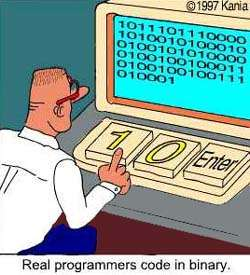

가상 기계(Virtual Machine)
기계를 추상화한 것.
소프트웨어일 수도, 하드웨어일 수도 있다.
각각의 가상 기계는 대응되는 언어들이 존재한다.
아래의 표에서 레벨에 해당하는 것들이 가상 기계이다.
| Level | Language |
|---|---|
| High-Level Language | Java, C, etc. |
| Assembly Language | x86 ASM, 65c816 ASM, etc. |
| Instruction Set Architecture(ISA) | Machine Code |
| Digital Logic | ??? |
어셈블리어(Low-Level Language)
기계어
고급 언어로 만들던, 저급 언어(ASM)으로 만들던 어차피 기계어로 바뀌어 실행되게 된다.

즉 프로그래머는 무엇을 만들던 간에 사실 위와 같이 코딩하는 것이다.
컴퓨터는 0과 1로 이루어진 전자 계산기이기 때문에 사실 0과 1만으로 이루어진
기계어만으로 코딩이 가능하다는 사실이다.
단, 가독성이 매우 안 좋아서 시간이 엄청 걸린다는 단점이 존재한다.
이러한 단점을 보완하고자 기계어와 1:1로 매칭되는 어셈블리어를 만들고,
그 어셈블리어를 기계어로 해석해주는 가상 기계를 만들게 된 것이다.
하지만 특정 프로세서에 의존적이기 때문에 이식성이 없다.
고급 언어(High-Level Language)
컴퓨터의 성능이 비약적으로 발전함에 따라 단순한 어플리케이션이 아니라
방대한 규모의 어플리케이션들을 개발하기 시작했다.
하지만 기계어와 1:1로 매칭되는 어셈블리어로 개발하기에는
시간과 유지보수 측면에서 너무나 많은 제약이 존재하였다.
이러한 단점을 보완하고자 어셈블리어를 좀 더 추상화 시킨 고급 언어가 등장하게 된다.
고급 언어는 어셈블리어와 일대다 관계를 가지고,
이는 기계어와도 일대다 관계를 가진다는 것을 뜻한다.
아래 예시를 통해 무슨 말인지 이해하자.
고급 언어로는 딱 2줄에 불과한 코드이다.
이 코드가 기계어와 1대1로 매칭되는 어셈블리어로 변환시켜 보자.
위와 같이 단 2줄의 고급 언어 코드는 5줄의 어셈블리어와 매칭이 되는 걸 볼 수 있다.
어셈블리어는 왜 쓸까?
누가 요새 저렇게 무식(?)한 문법으로 코딩을 하냐고 비아냥 할 수 있다.
생산성이 무지 낮은 건 사실이다.
하지만 고급 언어에서 불가능한 것이 있다.
바로 하드웨어의 직접 접근을 제공하지 않는 경우가 많다.
하드웨어, 장치 드라이버, 펌웨어 등등을 개발할 때
하드웨어로 직접 접근하지 못한다는 것은 매우 치명적이다.
또한 메모리를 매우 경제적으로 사용하기 때문에
소량의 메모리를 가지고 있는 전화기, 냉장고 등등의
임베디드 프로그램을 작성할 때 제격이다.
장치 드라이버
일반적인 운영체제 명령어에 대응하는 구체적인 하드웨어 동작으로 변환하는 프로그램.
똑같은 장치라 하더라도 운영체제에 따라서 다른 장치 드라이버를 개발해야한다.
저는 임베디드나 하드웨어 쪽 개발을 안 할건데요?
어셈블리어를 배우면 하드웨어, 운영체제, 응용 프로그램 간의
상호 작용을 전체적으로 이해하는데 큰 도움을 준다.
지금 당장은 어렵고 지루하더라도 훗날에 큰 도움이 되리라 믿고 있다.
각 가상 기계별 언어 호환 방법?
기계어의 상위 언어(저급, 고급 언어)들은 L1이라고 칭하겠다.
- 해독(Interpretation) - 인터프리터??
L1 프로그램이 실행됨에 따라 L1의 각 명령어는
기계어로 작성된 프로그램에 의해서 해독(decode)되기 때문에
실행이 가능해진다.
L1 프로그램은 즉시 실행되기 시작하지만
각 명령어는 먼저 해동되어야 실행될 수 있다. - 변환(Translation) - 컴파일??
L1 프로그램 전체가 특별히 설계된 기계어 프로그램에 의해
기계어 프로그램으로 변환된다.
그 후 변환된 기계어 프로그램은 컴퓨터 하드웨어에서 직접 실행될 수 있다.
어셈블러, 링커, 디버거
- 어셈블러 (Assembler)
어셈블리 언어로 작성된 소스 코드를 기계어로 변환하는 유틸리티 프로그램 - 링커 (Linker)
어셈블러가 생성한 각각의 파일들을 하나의 실행 파일로 합치는 유틸리티 프로그램 - 디버거 (Debugger)
프로그램이 실행되는 동안 프로그램을 단계적으로 실행하고,
레지스터와 메모리를 살펴보는 유틸리티 프로그램
javap를 이용해서 자바 클래스를 역어셈블(Deassemble)해보자.
Javap 란? (자바 역어셈블러)
역어셈블은 바이트 코드로 변환된 class 파일을
원본인 고급 언어(java)로 역컴파일(Decompile) 하는 게 아니라
클래스 파일 내부의 기본 구조와 역어셈블 코드(JVM의 바이너리 코드)만 나오게 된다.
클래스 내부의 상수와 함수들의 목록을 볼 때 유용하게 쓰인단다.
|
|
|
|
진수 변환하기
이는 프로그래밍 언어마다 대체적으로 내장된 라이브러리들이 있다.
하지만 진수를 손으로 변환하는 알고리즘을 그대로 옮긴다고 생각하고,
즉 내장된 라이브러리를 직접 구현한다는 생각으로 코딩을 해보았다.
|
|